--------点击蓝字关注我--------
--------点击蓝字关注我--------
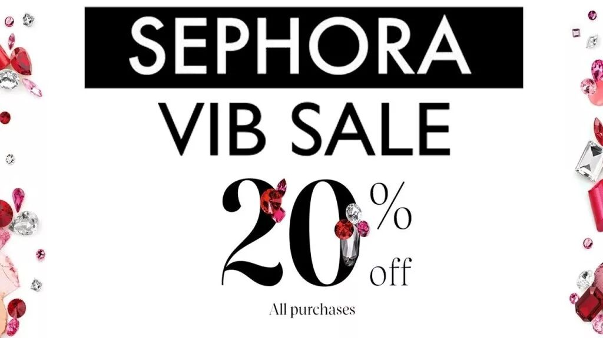
前段时间Sephora打折，老婆大人逛了一下，跟我抱怨说最近在英国网站上逛多了，感觉Sephora的一年两次的大型打折活动都没有吸引力了。
这让我颇为吃惊，因为Sephora的大型打折活动折扣力度还是蛮大的，印象里还是有很多人趋之若鹜的。
这也从侧面说明英国海淘的折扣力度可能更大，于是就请求她帮我科普一下，顺便这周的文章也有了素材。
Harrods
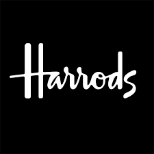
Harrods是一个英国的海淘网站，在上面可以买很多欧洲牌子的护肤品，衣服之类的，相比在美国的电商网站来说会便宜很多。而且很关键的一点是这样从英国海淘的东西不用上洲税。要知道加州这边的洲税就是10%，相当于直接打了9折。
这边举几个例子来说明一下价差。
以护肤品来说的话，比如上面可以买Lamer的30ml的面霜，在Harrods上面131，美国这边Barneys上面175+洲税。
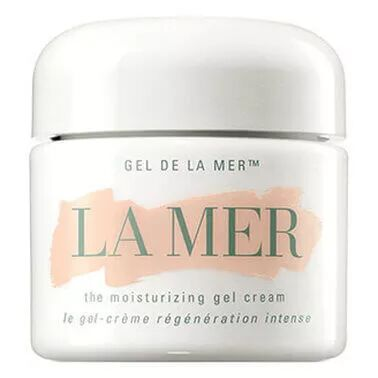
又或者比如Valmont的幸福面膜，Harrods上面185，美国这边官网上220+洲税。
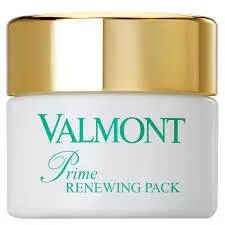
又比如Burberry的风衣，MaxMara的衣服之类的，Harrods上面也会便宜很多，不过本身还是比较贵就是了。
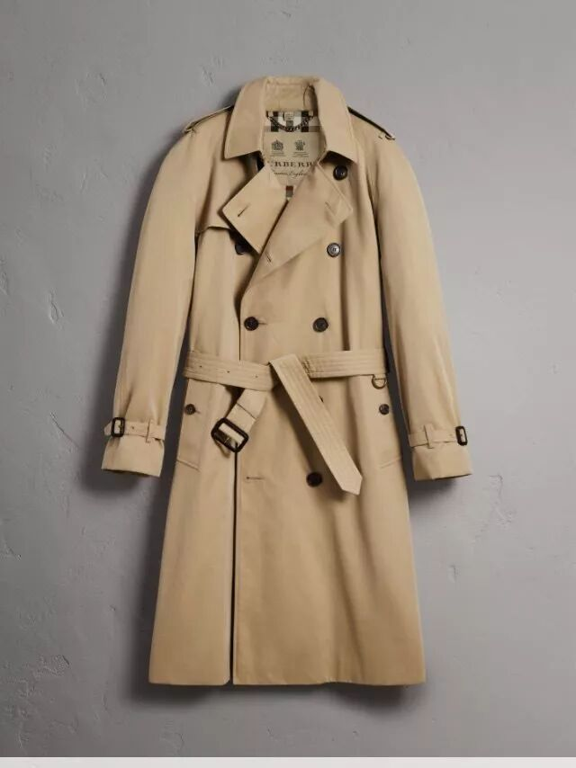
Selfridges
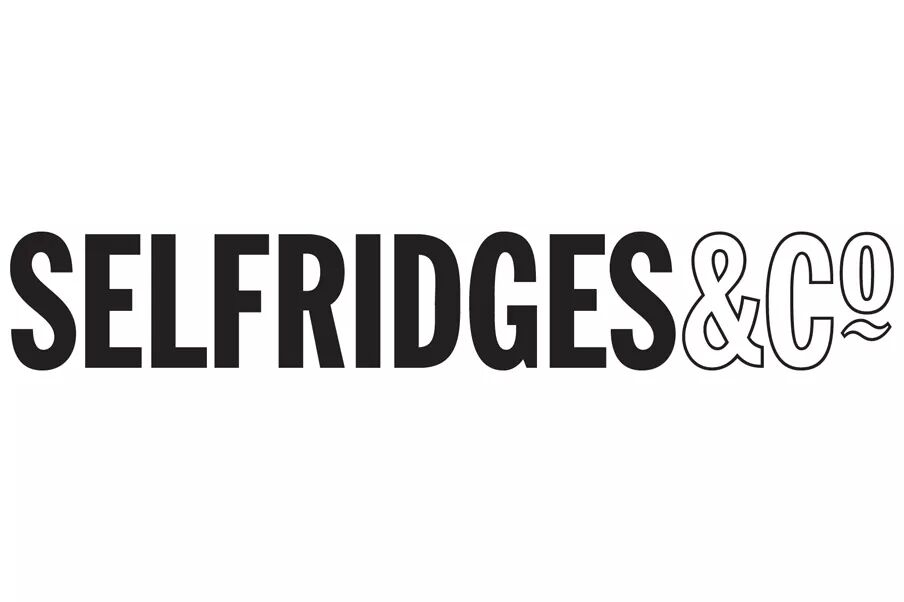
Selfridges也是一个英国的电商网站，上面的护肤品不是特别多，不过相对来说轻奢牌子的衣服在这里比较便宜。
比如说买Maje，Sandro，Allsaints这样的牌子在这上面都比较便宜。比如说Allsaint的经典款的皮衣在上面455，美国这边要498+10%的洲税。当然经典款的折扣一般都会比较小，别的款式一般折扣会更大一点。
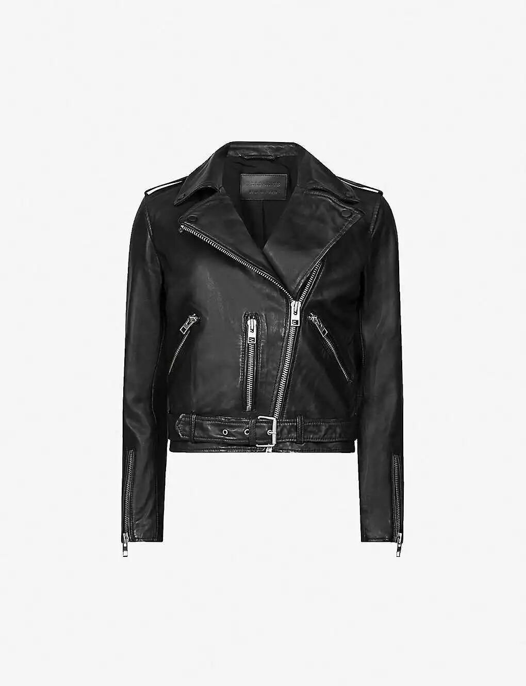
Skinstore
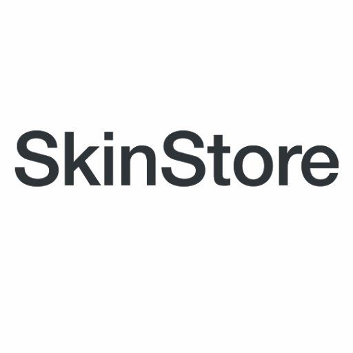
Skinstore似乎也是一个英国的电商网站，上面有很多折扣力度很大的护肤品，而且经常会有全站的打折。
国内很红的比如 Erno Laszlo（一个什么organic的面霜）打7折，蛮便宜的。
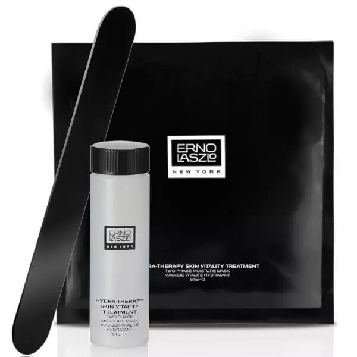
有的日本牌子，比如decorte（黛珂，一个日本牌子），比日本代购那边的价格还要便宜。
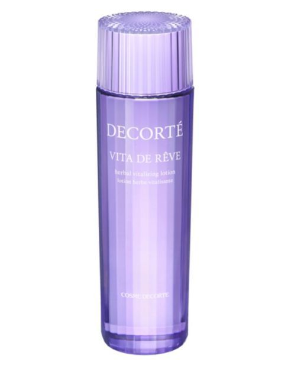
SkinCeuticals,一般在绝大多数网站上都是不会打折的。在Skinstore这边一年大概有两次会有全网站8折的不会exclude这个牌子的折扣。
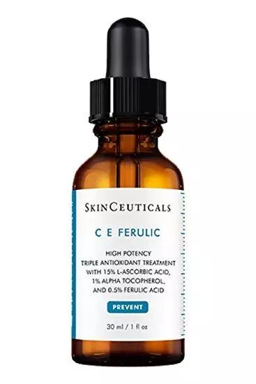
Moda Operandi
这个似乎是一个美国的电商网站，主要卖衣服的。因为它也比较便宜就也列在这儿。相比起Harolds来说它上面的货会比较偏潮一点，比如说Boyy这个牌子的包，一开始美国这边的电商都没有carry，只有这个网上有，而且有的时候还打折。
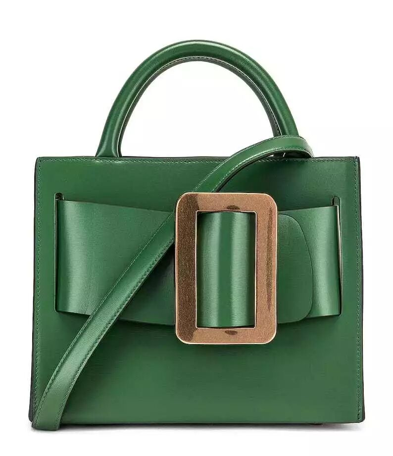
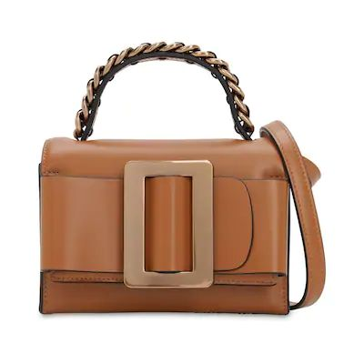
The RealReal
一个二手网站，在这边可以看到什么样的衣服才贬值最快（一般都是轻奢的牌子），经常都以1-2折的价格出售。而一些比较贵的东西反而贬值相对比较慢，比如4-5折这样子。
如果不是很在意一定要全新的衣服的，其实上面真的有很多好东西= =。
嘛就这样了，介绍完啦。